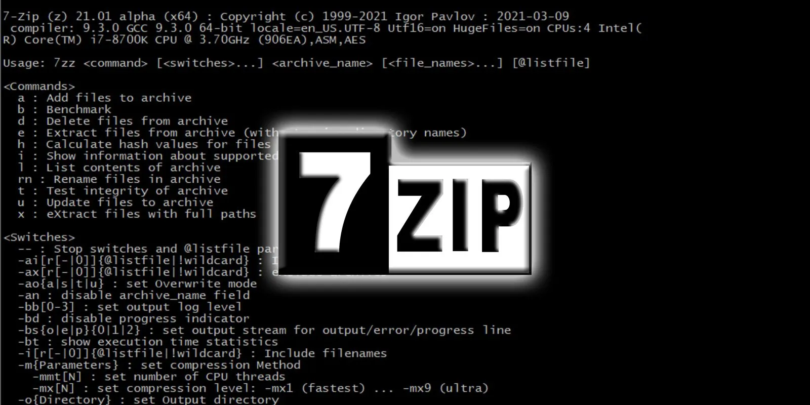

Linux Filesystem Explained
If you have ever used a Linux system, you probably heard the term root filesystem. When you install something with apt or want to configure an application’s settings, you need to meddle with the root filesystem. And if you are a developer deploying an application to Linux, just know that you need to get your hands dirty with it. But what is the root filesystem, anyway?
In this article I will explain the root filesystem, it’s brief history and all the directories inside it. There will be examples that gives some practical use cases.
The Reference Distrubiton Used in This Article
Now, let me tell this before I go any further. The root filesystem has a weird history. So, not everything I wrote here is 100% true. Although very similar, every Linux distribution has it’s own interpretation of the root filesystem. The explanations I give here are just a ‘best-practice’. Your own Linux distro might follow a different approach.
This article follows the Filesystem Hierarchy Standart 3.0. And because Ubuntu and ArchLinux is very popular, I referenced the ArchLinux‚Äôs (Kernel ver. 5.19) and Ubuntu 22.04’s (Kernel ver. 5.15) root filesystem. I will specify if they follow a different approach.
TLDR;
/ Root folder. You should not touch this.
/bin Binary files. Such as: ls, cp and mv.
/boot Boot files. EFI, kernels and grub.
/dev Device files. Such as: sda, tty and usb.
/etc Config files. Such as: netconfig and locale.conf
/home User home files. Such as Desktop and Documents.
/lib Library files. Such as libc, libssl, libevent.
/lib64 Library files but, for the x64 architecture.
/mnt Mounted disks and drives.
/media Same as /mnt but for removable drives.
/opt For additional software packages. Not used much.
/proc System information. Such as: running processes.
/root Home folder for the root user.
/run System information. Focused on runtime softwares.
/sbin System binary files. Such as: init and route.
/srv Static files to server over http/s or ftp.
/sys System information. Focused on kernel and its modules.
/tmp Temporary files. Not permenant, files gets deleted.
/usr System-wide user files. Clone of root folder.
/var Variable files. Such as logs. Stays permenant.
An Introduction
The term filesystem means ‘a way to organize files’. We can think of it like a librarian. It tells where the books should be placed and under which category. This way everything is organized and finding a book do not take hours.
Organized Color Palettes — Source: unplash.com by Andrew Pons
Everything in Linux is a file. You might heard this before but it’s actually very important. Yes, the Linux ‘thinks’ everything is a file. Your mouse, screen, printer, CPU, RAM, commands, documents, pictures are all files. Now, note that not every file is the same. Some files, like devices, are a special kind of file. You cannot just edit your RAM like it’s a text file. But you can view it with the ls commands from your bash terminal. It will be displayed like it’s a text file, but it’s technically a representation of the device. Like a metaphor you know, it’s there but not actually.
macOS Home Directory Folders — This folder is under /home/[your_user_name]
Since everything is a file. The Linux needs to organize them so everything is nice and tidy. This is done under the root filesystem. It is called the root filesystem because, it is at the root of every file (like an all-father). This root filesystem is, again, a file but it’s a very special one. It has an .ext format. When you power-on your computer this file will be ‘mounted’ by the Linux kernel.
Linus Torvalds, Creator of the Linux System — Source: youtube.com/@TED
Now, when Linus Torvalds and the very-smart people in the ‘team’ were building the Linux kernel they followed a filesystem. Again, to make everything in the system is nice and tidy. This filesystem is actually from the Minix OS. With time, this filesystem grew and there were some confussions. Like, which folder they need to put the system executables. At this exact time a solution came up from the Linux Foundation. Filesystem Hierarchy Standart 3.0. Short for FHS 3.0, is a standart that defines how a filesystem should be. You can read more about it from their official website.
Linux Foundation Logo — Source: linuxfoundation.org
Okay, enough with the introduction. Let’s go over the actual filesystem.
— — — — — — — — — — — — — — — — — — — — — — — — — — — — — — — — — — — — —
/
This is the root folder. Everything under this folder is just another folder. There are no actual files here. You also should not mess with this area. So, do not add new files and folders here, please.
/bin
Short for binaries. This is where you can find most of the system binaries. Commands like ls, mv, cp, pwd, whoami, cat, touchand useradd are all here. If the binary you developed is a system application, you should put it under /bin.
The binaries installed by apt, yum, snap and other similar tools, uses this folder.
Some Binaries under /bin
/bin folder has a weird history. In older Linux systems this was an actual folder. Old computers had small disk spaces. We are talking megabytes here. With time, this became a problem. The people working on Linux, were developing many new binaries and they were running out of space. So, they introduced another folder called /usr/bin. This folder is a disk that is mounted to the system. Alright, now there are two bin folders. And they are on different disks! Oh no, this is getting confusing. What do we do? Which one should we use?
Confused Guy — I can’t blame him
What did people do? They used both. With time, the disk space problem faded away. Now, there were no need for two binary locations: /bin and /usr/bin. So, they fixed this two-location problem by making the /bin folder a link to the /usr/bin. What does this mean? This means /bin is not actually a folder! It’s just a shortcut to /usr/bin. Problem solved! But why didn’t they just removed one of them? This is because there are a lot of binaries that uses both /bin and /usr/bin. If they were to remove one, they would end up with broken binaries.
/boot
Like it’s name sake, this folder holds boot related stuff. When your turn your computer on, it goes through a booting process. This process requires some files to be loaded into RAM (EFI, initrd & kernel). As you might have guessed, these are very important files, so they are stored in a special folder called /boot.
Some Files Under /boot
If you want to have multiple kernel versions, this is the place to put them. Or say, you want to configure your boot loader (for dual-boot) then you can do so under /boot/grub. But most of the time, you do not need to touch here directly. Some system updates (like a kernel upgrade) might add/change some files here.
Unless you really know what you are doing, I recommend you to just ignore this folder.
/dev
Short for devices. Your computer’s device files are stored here. But they are not an ordinary file. These files are like interfaces to your actual device. Like I said before, everything in Linux is a file. And yes, this includes your devices.
A GPU Slottted Into a PCIE Express Interface — Source: unplash.com by Daniel Hatcher
Every device is basically just an input/output software. It takes some input and gives out some output. Linux uses this concept in the form of device files. Let’s take a simple mouse for example.
Some Files Under /dev
Your mouse tracks your movements and clicks. When you move it to the right it sends some number to your computer. Then your mouse driver reads them to move your cursor. How does the driver reads the mouse? It does so by using the device file! Driver periodically reads the file /dev/input/mic to get data from the mouse. Notice that the file is under /dev folder.
/etc
The name of this folder is controversial. Some call it ‘editable-text-configurations’. And some call it etcetera. There is no official name for this folder. It’s just called etc. If you ask me, the former makes the most sense.
Some Files Under /etc
This folder includes all the configurations files. Applications and binaries on a Linux system might have some .conf files. With these files you can configure your system. For example, by editing the file /etc/locale.conf you can change your localization and time formats.
/home
This is the home folder. Like its name suggest, this is your home. All the users and their personal files are stored under here. Like pictures, music, documents, videos…
Every user has its own folder under /home. Say, there are two users called Kevin and Michelle. Then they will have their own home folder called /home/kevin and /home/michelle. Inside these folders they are free to do anything. When a user is added, his/her home folder is created automatically.
Default Home Directory in Ubuntu 22.04
Some Linux distributions modify the /home directory. They add some subfolders like Desktop/, Downloads/, Music/ and etc.
/lib
Short for libraries. The folder holds all the necessary libraries for the system and 3rd party applications. If you are a developer and have some library files on your hand. You should put them under here.
Some Libraries That Gets Installed With Numpy
Most, if not all, of applications has dependencies. They require some libraries to be present on the system in order to work properly. For example, all modern browsers require the OpenSSL library. They expect it to be present under the /lib folder (unless specified otherwise).
I should not that this folder has the same problem with /bin. There are two /lib folders. One is /lib and other is /usr/lib. And yes, /lib is not actually a folder. It is just a shortcut to /usr/lib. When you navigate to /lib, you will be navigating to /usr/lib.
/lib64
This folder is exactly the same as /lib. The only difference is that this /lib holds 32-bit libraries and /lib64 holds 64-bit libraries. If your library files are 64-bit you should put them here. Yes, you can put it also under /lib and it everything would still work but, it would not make sense.
/mnt
Short for mount. Your manually mounted drives should be done under this folder. In Linux you can use the mount command to mount any drive to a folder you like. Yes, you can use anywhere you want but /mnt is the recommended folder to mount
HDD Drive — Source: unsplash.com by Art Wall- Kittenprint
/media
This folder is exactly like /mnt. The difference between them is more of a personal preference and there is no right way. You can use both of them for mounting.
Generally speaking /mnt is not used as much. Nowadays most drives are automatically mounted. For example, Ubuntu mounts USB drives to /media folder.
Removable Drives — Source: unsplash.com by Samsung Memory
/opt
Short for optional. This one is tricky. The FHS 3.0 standard says that /opt folder is for any additonal software packages. So, if you have an additional software package, then umm.. put it under /opt? Well yes but, actually no.
AT&T Was One of The Companies That Used The /opt Folder For Their Software — Source: ft.com
Any applications and other packages you install to the system should be put under /opt but, there is another location for that. /usr/local/bin folder is also used for the same purpose. Most Linux distributions and people on the Internet uses /usr/local rather than /opt. Why? I do not really know. I guess /usr/local is more defined.
/proc
This folder is probably the most special one. Short for process or process information pseudo-file system. This folder contains files that gives information about the running system. CPU model, clock rate, memory size and all the related information is here. You can get tons of information about the hardware & the system from this folder alone.
Some CPU Information Stored in The /proc/cpuinfo File
I called /proc a special folder because it is untouchable. You can not modify anything under here. Because they are not controllable. Every time the system reboots, the files here re-generates. It is a virtual folder!
/root
I have said that /home is the place where all users and their files resides. Now what about root? Root is a special user. It has total control over everything in the system. It would not be right to treat it as a normal user, am I right?
Root is The Ultimate User
Since root is all mighty and powerful, it deserves its own home folder. The /root folder is the home folder of the root user.
/run
Short for run-time variable data. Although the name is a bit long, its purpose is actually very simple. /run folder holds all the variables and informations about system. Wait a minute. Didn’t we say /proc holds all the information about the system? Why do we have the /run folder then?
Some Files Under /run
The /proc folder holds hardware/device related information. The /run folder, on the other hand, holds more software related information. For example; current users in the system, how many services are running and their status…
/run folder is not special like /proc. It holds actual files you can edit. But the files in here gets updated/removed every time the system reboots.
/sbin
Short for system binaries. Like the /bin, this folder holds binaries. But what’s the difference you ask? Well the answer is not clear and depends on who you ask.
Some Files Under /sbin
Generally speaking /sbin holds system-related binaries and /bin holds everything else. Now, in the old days this separation was useful. Since /sbin is system-related, they put more important and critical binaries there. Nowadays, the line between /sbin and /bin is blurry. They both contain important binaries for the system.
The overall idea is, /sbin should be used for system binaries. Binaries that require root privileges. If the binary is not system-related or does not need root permissons, then just use /bin.
/srv
Short for serve. This is a very specific folder. The FHS 3.0, tells that the /srv should contain site-specific data files. These files are, static web files, scripts and anything a web server, serves.
(Generally) Static Web Files
I didn’t see any program to actually use this folder other than the FTP and some web servers. If you use your Linux only as a simple web server and want to serve some static .html, .css and .js files, then you should use this folder.
/sys
Short for system. We have seen that /dev folder is for device files. It’s an interface to devices. The /sys folder is the same, except it’s an interface to the kernel. It contains information about the devices, drivers and kernel itself.
Now you might be getting confused. Okay we have /proc for system information and /sys for kernel information. Umm.. isn’t kernel THE system? What’s the difference?
More Linux Filesystem Confusion
The problem is again controversial. When the Linux introduced the /proc folder, they kept all system information and process information there. Over time, this folder become over-populated. They wanted to some separation: /proc should be used for process information and /sys for system information. But, as you might have guessed, this caused some debate over what is a process info and what is a system info.
The move from /proc to /sys is slow. There are some files which should be on /sys but are on /proc. But the general idea is that /sys holds information about the kernel and the low-level system itself.
/tmp
Short for temporary. When your want to store some temporary files, for example storing caches and etc., you should use this folder. Note that the files here are for temporary files ONLY. The system might delete the files here after some time. After an hour or a reboot, the /tmp folder gets cleaned.

7zip FileManager Can Use The /tmp folder to Temporarily Load .zip Files — Source: bleepstatic.com
If you want to store logs for example, do not use here. The system does not guarantee that they will still exist after a reboot.
Any user application can use this area. You do not need a root privilages to access /tmp. You can store anything here. Just note that they can get deleted without a warning by the system. If you want to store more consistent temporary files like logs, then you should check the /var folder.
/usr
There are two names for this folder: user and user-system-resources. You can use either one, but most people just call this folder user. I prefer the latter.
The /usr folder is very similar to the root folder. It has its own hierachy and subfolders. Majority of the binaries, resources, utilities, header files and etc., are under /usr. The files under here are read-only and can be used by all the users in the system.
Some Files Under /usr
Like the root folder, the /usr has its own hierarchy. Some /usr subfolders are: /bin, /lib, /sbin, /local, /include, /share. The purpose of the /usr folder is to separate system files from user files. And just like any other Linux folder this separation is confusing.
The general idea is that /usr is another folder just like the / folder. It focuses more on user resources. Binaries you can install, C/C++ headers, libraries you install and everything YOU can add to the system is under /usr. Yes you can add files to / folders but, you should use /usr whenever you can.
More Confusion :(
Folders like /bin and /sbin are root folders. I just lied. They are actually soft-links to /usr/bin and /usr/bin. As you can see the separation between system files and user files is confusing. Linux is trying to make every folder useful and seperate files according to their purposes. But doing this without creating problems and broking legacy binaries is very hard.
There is one more thing I want to add. It’s the /usr/local folder. This folder is another root folder clone. It’s just like the /usr folder. It has its own hierarchy and subfolder just like /usr.
/var
Short for variables. Mainly used for storing logs and other similiar files. The files here are preserver even after reboots. So, if you have a temporary file that you want to keep, then you should put it here.
Some Files Under /var
The /tmp folder deletes files after sometime but, the /var folder does not. The main purpose of the /var folder is to hold files that changes by time. Like the name suggest, the files under /var vary from time to time.
Final Words
As you can see, everything in Linus is really a file. Yes, there are some special files like device files but, overall everything is fundamentally a file.
The Linux filesystem is not perfect. This article proves it. There are some folders that is not well defined and does not have a clear purpose. It is up to you to device which folder defines your needs the most. The answer is not clear and whichever folder you use, just try to stick with it.
I have faith that with time the Linux filesystem will evolve into a more well-defined hierarchy. The confusions around the folders like /bin, /usr/bin and /usr/local/bin are crazy. No one knows which one to use exactly. And you will always get different opinions and answer from different people about this topic.
I hope that you liked my article and learned something new. If you spot any errors or mistakes please let me know.
Take care ❤

Thanks for reading & Take care ❤
Follow me on X (formerly Twitter), if you like my works that is >.<